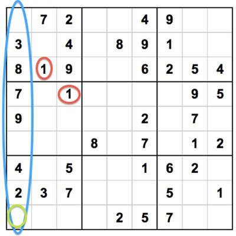

Se usan los números del 1 al 9
Sudoku se juega en una cuadrícula de 9 x 9 espacios. Dentro de las filas y columnas hay 9 "cuadrados" (compuestos de 3 x 3 espacios). Cada fila, columna y cuadrado (9 espacios cada uno) debe completarse con los números del 1 al 9, sin repetir ningún número dentro de la fila, columna o cuadrado. ¿Suena complicado? Como puede ver en la imagen de abajo, cada cuadrícula de Sudoku viene con algunos espacios ya completados; cuantos más espacios se llenen, más fácil será el juego. Los rompecabezas Sudoku más difíciles tienen muy pocos espacios ocupados.
No repita ningún número

Como usted puede ver, en el cuadrado superior izquierdo (marcado con un círculo azul), este cuadrado ya tiene 7 de los 9 espacios ocupados. Los únicos números que faltan en el cuadrado son 5 y 6. Al ver qué números faltan en cada cuadrado, fila o columna, podemos usar el proceso de eliminación y el razonamiento deductivo para decidir qué números deben ir en cada espacio en blanco.
Por ejemplo, en el cuadrado superior izquierdo, sabemos que necesitamos agregar un 5 y un 6 para poder completar el cuadrado, pero con base en las filas y cuadrados vecinos no podemos deducir con claridad qué número agregar en qué espacio. Esto significa que, por el momento, debemos ignorar el cuadrado superior izquierdo e intentar llenar espacios en otras áreas de la cuadrícula.
No debe adivinar
El sudoku es un juego de lógica y razonamiento, por lo que usted no debería adivinar. Si usted no sabe qué número colocar en un espacio, siga escaneando las otras áreas de la cuadrícula hasta que vea la oportunidad de colocar un número. Pero no trate de "forzar" nada: el Sudoku recompensa la paciencia, las percepciones y el reconocimiento de patrones, no la suerte ciega o las suposiciones.
Utilice el proceso de eliminación
¿Qué queremos decir con el uso del "proceso de eliminación" para jugar Sudoku? Aquí tenemos un ejemplo. En la cuadrícula de Sudoku (que se muestra a continuación), a la columna vertical de la izquierda (marcada con un círculo en azul) le faltan solo algunos números: 1, 5 y 6. Una forma de averiguar qué números pueden ir en cada espacio es usar el "proceso de eliminación" comprobando qué otros números ya están incluidos dentro de cada cuadrado, ya que no puede haber duplicación de los números del 1 al 9 dentro de cada cuadrado (o fila o columna).
En este caso, podemos notar rápidamente que ya hay números 1 en los cuadrados superiores izquierdos y centrales de la cuadrícula (con el número 1 marcado con un círculo rojo). Esto significa que solo queda un espacio en la columna más hacia la izquierda donde posiblemente podría ir un 1, encerrado en un círculo en verde. Así es como funciona el proceso de eliminación en Sudoku: usted averigua qué espacios están disponibles, qué números faltan, y luego deduce, según la posición de esos números dentro de la cuadrícula, qué números van en cada espacio.
Las reglas de Sudoku son relativamente simples, pero el juego es infinitamente variado, con millones de posibles combinaciones de números y una amplia gama de niveles de dificultad. Pero todo se basa en los principios simples de usar los números del 1 al 9, completando los espacios en blanco basados en el razonamiento deductivo, y nunca repitiendo ningún número dentro de cada cuadrado, fila o columna.